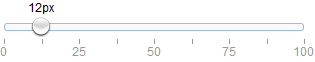

Override defaults with $.fn.slider.defaults.
The slider enables the user to choose a numeric value from a finite range. When moving the thumb control along the track, a tip will display to represent the current value. The user can customize slider by setting its properties.
When using as a form field, create slider from <input> markup.
- <input class="easyui-slider" value="12" style="width:300px"
- data-options="showTip:true,rule:[0,'|',25,'|',50,'|',75,'|',100]">
Create slider from <div/> is also allowed but the 'value' attribute is invalid.
- <div class="easyui-slider" data-options="min:10,max:90,step:10" style="width:300px"></div>
Create slider programatically.
- <div id="ss" style="height:200px"></div>
- $('#ss').slider({
- mode: 'v',
- tipFormatter: function(value){
- return value + '%';
- }
- });
| Name | Type | Description | Default |
|---|---|---|---|
| width | number | The width of slider. | auto |
| height | number | The height of slider. | auto |
| mode | string | Indicate what type of slider. Possible values: 'h'(horizontal),'v'(vertical). | h |
| reversed | boolean | Set to true the minimum value and maximum value will switch their positions. This property is available since version 1.3.2. | false |
| showTip | boolean | Defines if to display value information tip. | false |
| disabled | boolean | Defines if to disable slider. | false |
| value | number | The default value. | 0 |
| min | number | The minimum allowed value. | 0 |
| max | number | The maximum allowed value. | 100 |
| step | number | The value to increase or descrease. | 1 |
| rule | array | Display labels beside slider, '|' — show just line. | [] |
| tipFormatter | function | A function to format slider value. Return string value that will display as tip. |
| Name | Parameters | Description |
|---|---|---|
| onChange | newValue,oldValue | Fires when the field value is changed. |
| onSlideStart | value | Fires when begin to drag slider. |
| onSlideEnd | value | Fires when end to drag slider. |
| onComplete | value | Fires when the slider value is changed by user, no matter dragged or clicked the slider. This event is available since version 1.3.4. |
| Name | Parameter | Description |
|---|---|---|
| options | none | Return the slider options. |
| destroy | none | Destroy the slider object. |
| resize | param |
Set slider size. The 'param' parameter contains following properties: width: the new slider width height: the new slider height |
| getValue | none | Get slider value. |
| setValue | value | Set slider value. |
| enable | none | Enable the slider component. |
| disable | none | Disable the slider component. |